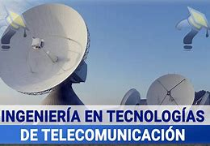

BIENVENIDOS A LA CARRERA DE INGENIERIA EN TELECOMUNICACIONES
La Ingeniería en Telecomunicaciones es una disciplina que se encarga del diseño, implementación y mantenimiento de sistemas de telecomunicaciones. Combina principios de la ingeniería eléctrica y las ciencias de la computación para desarrollar sistemas que permiten la comunicación eficiente entre personas y dispositivos. Esta rama de la ingeniería abarca áreas como la transmisión de datos, redes, sistemas inalámbricos y comunicación por satélite. La Ingeniería en Telecomunicaciones es una disciplina que se encarga de diseñar, implementar y gestionar sistemas de comunicación a través de tecnologías como la telefonía móvil, las redes de datos, la televisión por cable, entre otras.
LA UNEVERSIDAD TECNICA DE AMABTO ABRE CUPOS PARA LA CARRERA DE INGENIERIA EN TELECOMUNICACIONES.
La facultad es un sistema avanzado donde tu podras demostarar tu capacidad estudiada en tu colegio. Constan de muchas instalaciones como los laboratorios donde cada uno podra usar una maquina por alumno, aula especializadas con proyectores para facilitar el conocimiento, una area administrativa donde podras pedir con materiales que lo tengas. La Ingeniería de Telecomunicaciones es una rama de la ingeniería que se dedica al diseño, implementación y mantenimiento de sistemas de telecomunicaciones, redes de datos y esquemas de seguridad de la información. Los estudiantes aprenden matemáticas y física aplicadas a telecomunicaciones, circuitos, electrónica y programación para el diseño de sistemas de telecomunicación. El objetivo es resolver problemas de transmisión y recepción de señales e interconexión de redes.
Volver a la página principal